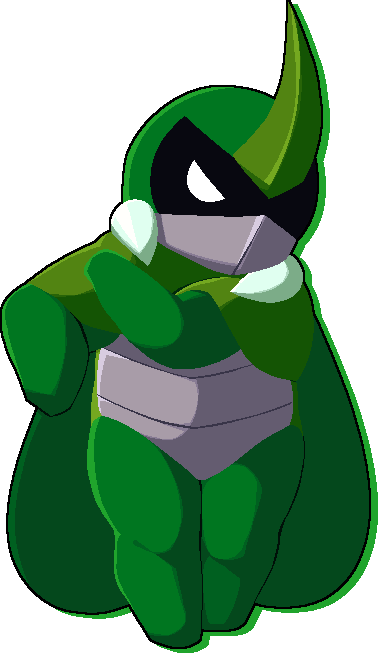

5A
A
{kind=link}
| Damage | Guard | Attribute |
|---|---|---|
| 25 | mid | BODY |
A quick chop.
5B
B
{kind=link}
| Damage | Guard | Attribute |
|---|---|---|
| 50 | mid | BODY |
Kabbu steps forward with a backfist.
5C
C
{kind=link}
| Damage | Guard | Attribute |
|---|---|---|
| 80 | mid | BODY |
Kabbu slashes his horn downwards.
2A
A
{kind=link}
| Damage | Guard | Attribute |
|---|---|---|
| 25 | low | FOOT |
Crouching chop.
2B
B
{kind=link}
| Damage | Guard | Attribute |
|---|---|---|
| 48 | low | FOOT |
Crouching kick.
Moves Kabbu forwards slightly.
2C
C
{kind=link}
| Damage | Guard | Attribute |
|---|---|---|
| 78 | low | FOOT |
Sweeps with horn.
j.A
A while airborne
{kind=link}
| Damage | Guard | Attribute |
|---|---|---|
| 48 | high | DIVE |
Forward jump kick.
j.B
B while airborne
{kind=link}
| Damage | Guard | Attribute |
|---|---|---|
| 74 | high | DIVE |
Elbow!
Charged version GROUNDSLIDEs.
j.C
C while airborne
{kind=link}
| Damage | Guard | Attribute |
|---|---|---|
| 79 | high | DIVE |
Slashes horn upwards.
Charged version LAUNCHes the opponent towards Kabbu.
5AA
A after 5A

| Damage | Guard | Attribute |
|---|---|---|
| 33 | mid | BODY |
-
5AAA
A after 5AA

| Damage | Guard | Attribute |
|---|---|---|
| 37 | mid | BODY |
-
5BB
B after 5B
{kind=link}
| Damage | Guard | Attribute |
|---|---|---|
| 77 | mid | BODY |
Kabbu does an uppercut.
5CC
C after 5C

| Damage | Guard | Attribute |
|---|---|---|
| 80 | mid | BODY |
Kabbu slashes his horn inwards.
Knocks the opponent towards Kabbu, with charging making the effect stronger and increasing hitstun/blockstun.
3B
B

| Damage | Guard | Attribute |
|---|---|---|
| 37 | none | BODY |
Advances forward with a kick.
Slightly minus on block, but can be very plus depending on spacing.
Kabbu’s lower body is FOOT-invulnerable for a portion of the attack.
3C
C

| Damage | Guard | Attribute |
|---|---|---|
| 58 | mid | BODY |
Kabbu swings upwards with both fists.
Can even on block when charged.
Upper body is DIVE-invulnerable.
66B
B while dashing
{kind=link}
| Damage | Guard | Attribute |
|---|---|---|
| 50 | mid | BODY |
Kabbu digs his horn into the ground and lifts it up, bringing the opponent towards himself. on hit only.
Can also be used as an anti-air due to the angle it covers, but it is a little slow.
66C
C while dashing

| Damage | Guard | Attribute |
|---|---|---|
| 70 | mid | BODY |
Kabbu hornsprings forward with a kick.
Cancelable into air specials on hit or guard.
Upper body is DIVE-invulnerable.
Ground throw
A+D or A+D

| Damage | Guard |
|---|---|
| 120 | grab |
Kabbu shoulder checks the opponent, crumpling them.
Air throw
A+D or A+D while airborne

| Damage | Guard |
|---|---|
| 108 | grab |
Kabbu catches the opponent on his horn and slings them away.
Unlike other air throws, you can actually combo after this one when used mid-combo.
Landing a raw air throw will make Kabbu throw the opponent upwards instead, making it easy to get a combo anywhere.
S
S
{kind=link}
| Cost | Damage | Guard | Attribute |
|---|---|---|---|
 1 1
|
70 | mid | BODY |
Kabbu braces himself, then slashes forward with his horn when you release S. Fully charged version is unblockable.
Has one hit of guard point. The guard point goes away once you release S unless you’re at full charge.
Guarding a move makes the release faster.
You can dash cancel during startup, or once the attack connects.
Also cancelable into other Skills on hit or block.
Taunt
S

| Cost | Damage | Guard | Attribute |
|---|---|---|---|
| 4
|
101 | none | BODY |
Kabbu taunts the opponent. If the opponent hits him within a certain time, Kabbu catches the attack with his horn and counters.
The counterattack launches the opponent behind Kabbu, allowing you to get a followup combo.
Under Strike
hold , S

| Cost | Damage | Guard | Attribute |
|---|---|---|---|
| 3
|
122 | low | DIVE |
Kabbu dives into the ground, furiously digging his way forwards and traveling under most attacks.
The initial portion of the attack can only be hit by BODY, FOOT, and DIVE attacks.
While Kabbu is digging, he can only be hit by FOOT and DIVE attacks.
Very useful for going under projectiles and pokes.
Iron Side
A

| Cost | Guard | Attribute |
|---|---|---|
| 2
|
mid | BODY |
Kabbu shoulder charges forward a small distance.
Punishable point-blank, but you can space it to be plus on block.
If the first hit connects at max range, you can combo meterlessly off the tumble for a higher-damage route.
A followup is a spinning haymaker that knocks down. It’s slightly unsafe, but not very rewarding either. Useful mostly as a combo ender, since it’s the fastest followup.
C followup is a second shoulder attack that is able only on hit, and is more unsafe than the A followup. Mostly useful in combos.
And finally, you can also cancel the first hit into Horn Dash (shortcut: B).
Horn Dash
B

| Cost | Damage | Guard | Attribute |
|---|---|---|---|
| 1
|
130 | mid | BODY |
Kabbu dashes forward with his horn out. It’s super unsafe, but Fatal Counters on counterhit.
The damage is reduced when canceled from Iron Side (236A).
In the air, Kabbu bounces off the opponent.
214A
A

| Cost | Damage | Guard | Attribute |
|---|---|---|---|
| 3
|
105 | high | DIVE |
Kabbu chops downwards. In the air, Kabbu’s forward momentum stops and he plummets to the ground.
The uncharged version is a very fast overhead, but you can’t combo meterlessly and it scales as hard as a throw. It’s also not safe.
The charged version is slower, but you can combo from it with lights (heavies if you counterhit) and it’s safer.
The air version is good as an instant overhead and scales less harshly than the uncharged grounded version, but there are fewer opportunities to land it raw.
Air version can’t be charged.
In a juggle, all versions GROUNDSLIDE, allowing combo followups.
214B
B

| Cost | Damage | Guard | Attribute |
|---|---|---|---|
| 5
|
200 | grab | BODY |
Kabbu tries to grab the opponent. If it connects, he tosses the opponent up and skewers them on his horn before dropping them to the ground beside him.
Midscreen, you can combo using Chain Cancel. In the corner, you can followup meterlessly with a light normal.
j.214B
B while airborne

| Cost | Damage | Guard | Attribute |
|---|---|---|---|
| 4
|
190 | grab | DIVE |
Kabbu tries to grab the opponent.
Both versions will connecton standing or airborne opponent in a combo.
Outside of a combo, only the charged version can hit standing opponents.
On a successful grab, he will slam the opponent to the ground.
If you charged the grab, this causes a comboable GROUNDBOUNCE.
Earth Shaking
A

| Cost | Damage | Guard | Attribute |
|---|---|---|---|
| 2
|
51 | low | FOOT |
Kabbu pounds the ground and sends a shockwave that travels a short distance and spikes a rock pillar if it passes under the opponent. Charged version has longer startup, but is slightly plus on block.
Boulder Toss
B

| Cost | Damage | Guard | Attribute |
|---|---|---|---|
| 3
|
70 | all | DIVE |
Kabbu digs up a boulder from the ground, tossing it into the air for it to land slightly in front of him.
You can hit the boulder with different normals to launch it at different angles. Hitting a boulder with normals allows you to cancel into other Skills.
The boulder can absorb three hits of projectiles.
Plus on block even if the rock hits immediately, making it a powerful pressure and okizeme tool. It’s even a good combo tool. It does it all!
Dash Through
C

| Cost | Damage | Guard | Attribute |
|---|---|---|---|
 100 100
|
250 | mid | BODY |
Kabbu charges fullscreen in almost an instant, running straight through any opponents.
You can link another EX Skill afterwards, or use Chain Cancel to continue the combo.
Recovers 5 on hit.
Divebomb Cross
C

| Cost | Damage | Guard | Attribute |
|---|---|---|---|
| 100
|
300 | none | BODY |
Kabbu tries to grab the opponent.
If the grab connects, he’ll do a spinning jump high into the air before landing on the opponent with both arms crossed.
Highly damaging combo ender if you can land it.
Also good as a mixup tool, since you can’t jump out after the super freeze.
Recovers 5 on hit.
Seismic Lift
C

| Cost | Damage | Guard | Attribute |
|---|---|---|---|
| 100
|
192 | all | BODY |
Kabbu stomps the ground, creating a shockwave of pillars of rocks. Massively plus on block, allowing you time for a few mixups. Recovers 8 on hit.
Deadly Double Combination
S

| Cost | Damage | Guard | Attribute |
|---|---|---|---|
| 200
|
430 | mid | BODY |
Kabbu punches the opponent in the gut, then spikes them so hard that they groundbounce off the top of the screen.
Second hit doesn’t happen if the first is blocked or whiffs.
Deals ridiculous damage and you can still combo afterwards!
Recovers 3 on hit.